Quantitative Reasoning
1015SCG
Lecture 1
Quantitative Reasoning
Welcome!
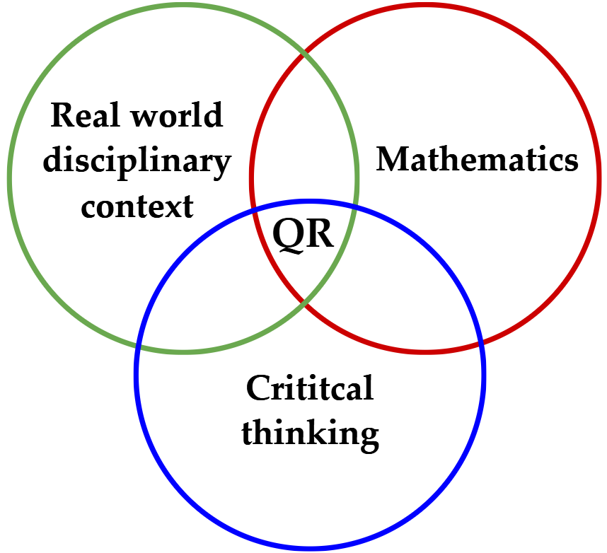
People
• Gold Coast & Nathan
- Convenor/Lecturer: Dr Juan Carlos Ponce Campuzano
Navigating the course site
|
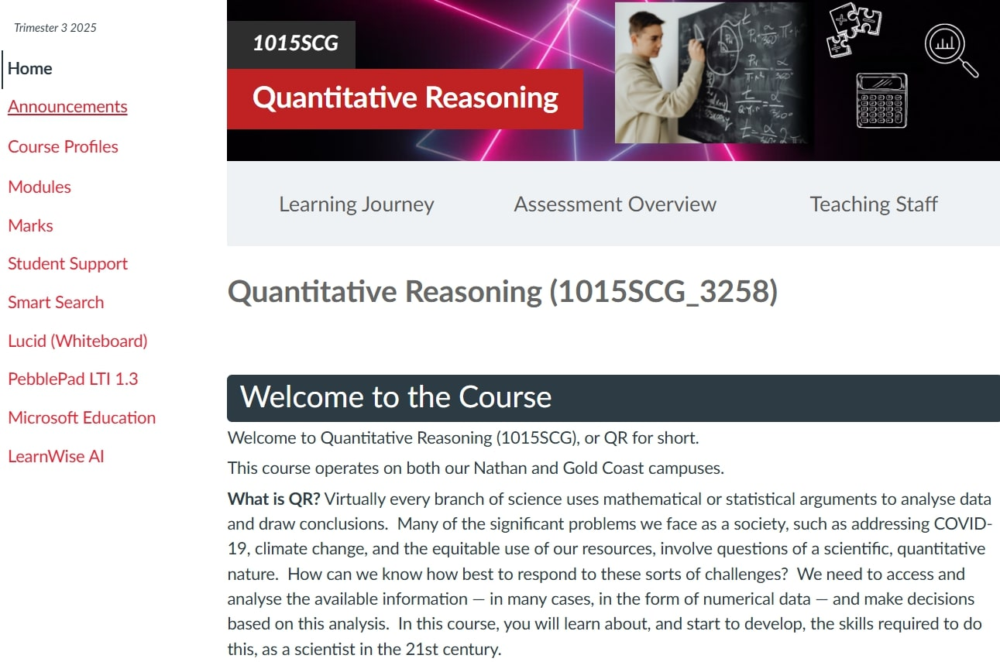 |
Navigating the course site
Do especially check:
|
How the course works
- Pre-recorded videos
- Lecture Notes
- In-person lectures
- Face-to-face workshops (in even weeks, mandatory and marked)
What if you need help?
|
Course stuff
|
Bigger stuff
|
Assessment
- No Exam 😃
- 50% of total marks to pass
-
Extensions/Deferred assessment/Special consideration:
Apply via the Official Channel
📝 Workshop Tasks - 25%
- Workshops in Even weeks only - 6 in total.
- Report writing task throughout all workshops - marked component.
- The marks will only be granted during the workshop.
- If you have a valid reason to miss the workshop apply for deferred assessment until next workshop within 3 days and provide supporting documentation (NOT the extension). Do the task at home and present it for marking to your demonstrator during the next workshop.
🤔 What do you need for workshops?
- Device with working Excel and Word (not online!) 💻
- Office available for all students - instructions
- Basic Excel knowledge - nice beginners' guide
📆 Workshops schedule
-
Workshop Group 1
- Thursdays: Weeks 2, 6, 8, 10, and 12 (12pm - 2pm, G01_3.55)
- Friday: only in Week 4‼️ (10am - 12pm, G01_3.55)
-
Workshop Group 2
- Fridays: Weeks 2, 4, 6, 8, 10, and 12 ( 1pm - 3 pm, G31_3.14)
Employability Task A and B - 10%
📝 You have to write a short reflection on how mathematics is likely to play a role in your career ambitions.
-
Part A:
Identify vital Maths skills and key topics
Draft → week 3 - 5% -
Part B:
Evidence your skills and plan the way
forward
Completed → week 9 - 5%
Full details in Canvas → Modules → Employability Tasks
Maths & Inference and Scientific Critiquing Tasks
-
♾️ Maths & Inference Task - 30% (week 7)
Full details in Canvas → Modules → Maths and Inference Task
- 🔬 Scientific Critiquing Task - 35% (week
11)
Full details in Canvas → Modules → Scientific Critiquing Task
Assessment: Summary
| Item | Weight | Due |
|---|---|---|
| Workshop (best 5) | 25% | Ongoing |
| Employability A | 5% | Week 3 |
| Maths and Inference | 30% | Week 7 |
| Employability B | 5% | Week 9 |
| Scientific Critiquing | 35% | Week 11 |
| 🎉 NO FINAL EXAM!! 🎉 | ||
Schedule Part I
|
|
Schedule Part II
|
|
What is QR?

What is QR?
Is this just another Maths course? Not really!


When did we start counting stuff? 🤔
When did we start counting stuff? 🤔
The Ishango bone
One of the most famous artifacts of early counting discovered is the Ishango bone, dated between 18,000 to 23,000 years old.
Reference: Huylebrouck, D. (2019). Africa and Mathematics, Mathematics, Culture, and the Arts. Cham: Springer International Publishing, pp. 153-166,
When did we start counting stuff? 🤔
Ancient Mesopotamia
Small clay objects, dating from as far back as 7500 BCE, used for counting.
When did we start counting stuff? 🤔
Ancient Mesopotamia
Clay envelope and it contents, from Susa, Iran, circa 3300 BCE.
When did we start counting stuff? 🤔
Ancient Mesopotamia
|
|
|
Impressed tablets from Susa, Iran, circa 3200 BCE. Each circular impression stood for one large measure of grain; each wedge or conical impression designated a smaller measure of grain.
When did we start counting stuff? 🤔
Ancient Mesopotamia

The Plimpton 322 clay tablet, with numbers written in cuneiform script. Believed to have been written around 1800 BC.
When did we start counting stuff? 🤔
Ancient numerical systems
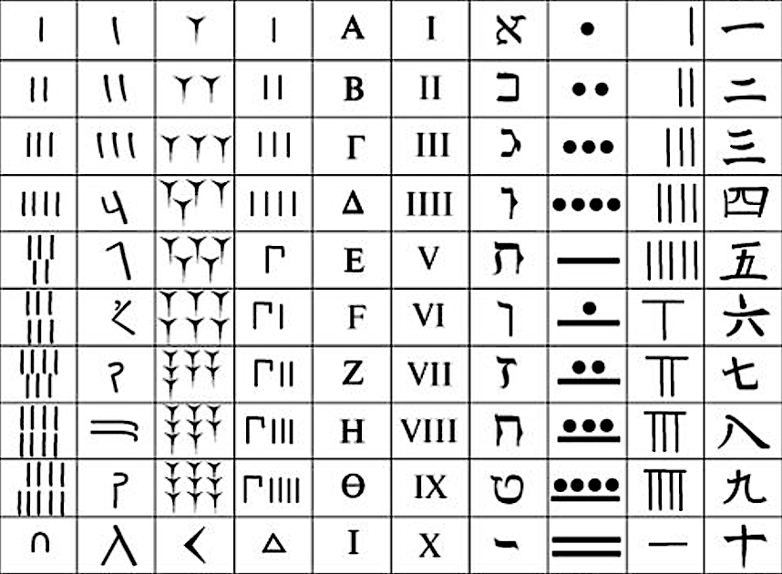
Can you guess which civilization each number system belongs to?
When did we start counting stuff? 🤔
Introduction of the Hindu-Arabic numerical system
|
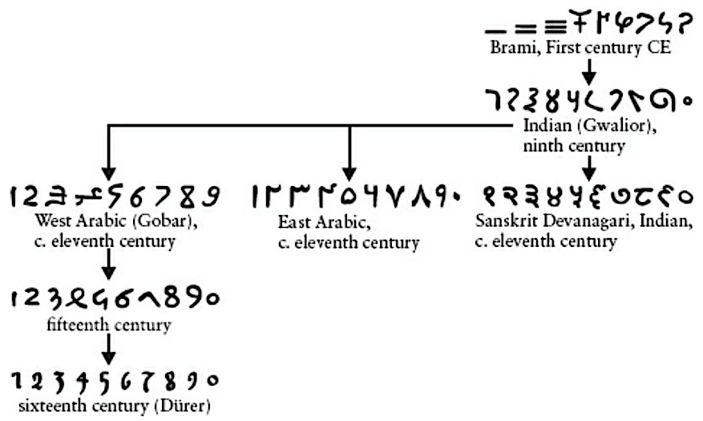 Introduced in Europe between the 13th and 15 th centuries. |
|
The modern numerical system
\(0\;\;1\;\;2\;\;3\;\;4\;\;5\;\;6\;\;7\;\;8\;\;9\)
|
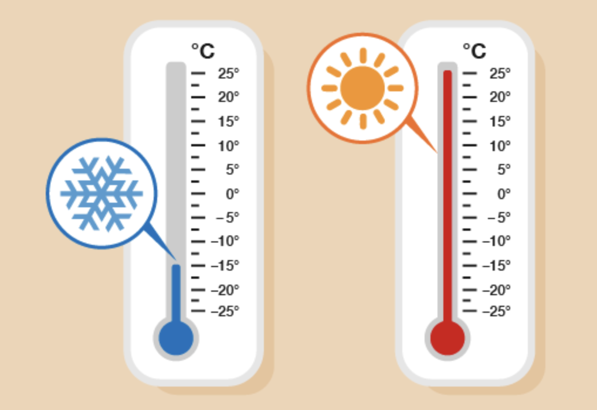 |
|
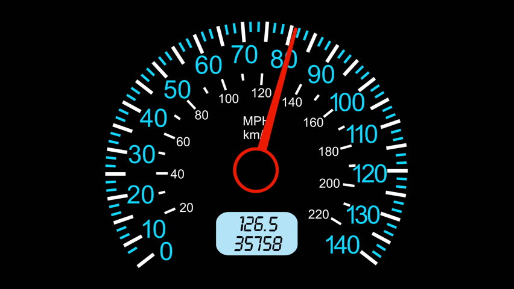 |
|
|
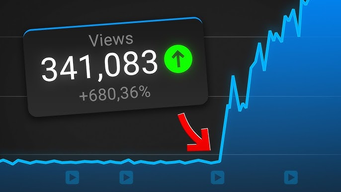 |
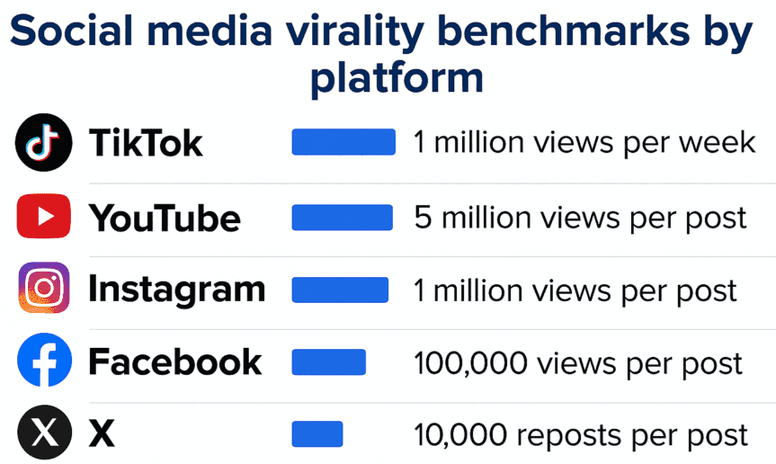 |
What is QR?
Not just another Maths course
- Relate the use of mathematics to your own scientific studies and interests
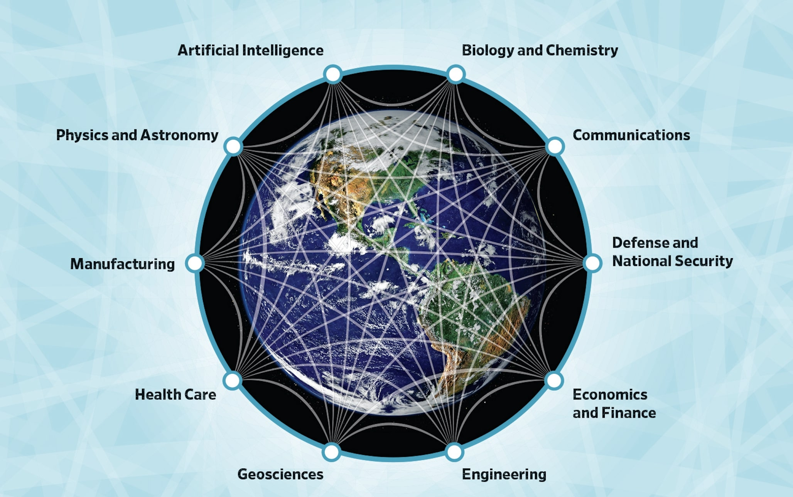
Image source: National Academies
Not just another Maths course
- Use computational tools to perform mathematical calculations
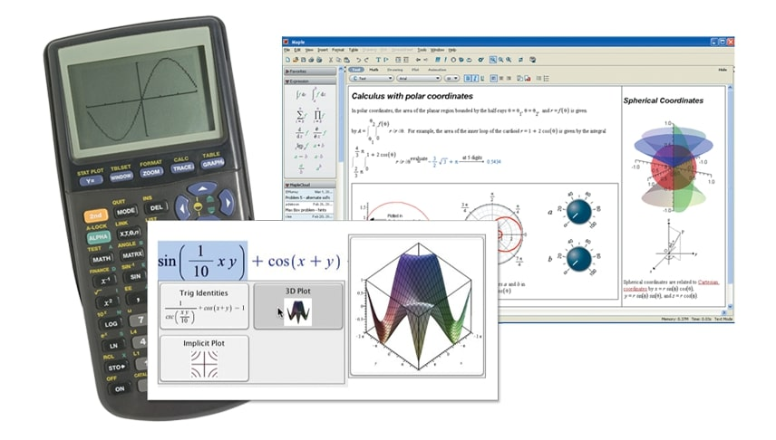
Image source: Mapple Soft.
Not just another Maths course
- Construct and critique quantitative scientific arguments
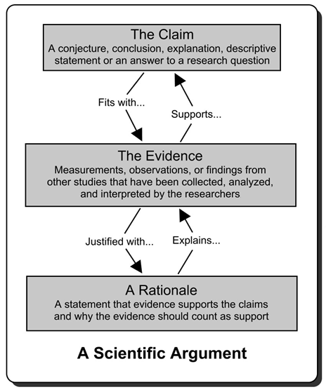
Image source: An Introduction to Scientific Argumentation
Not just another Maths course
- Communicate scientific arguments effectively in writing
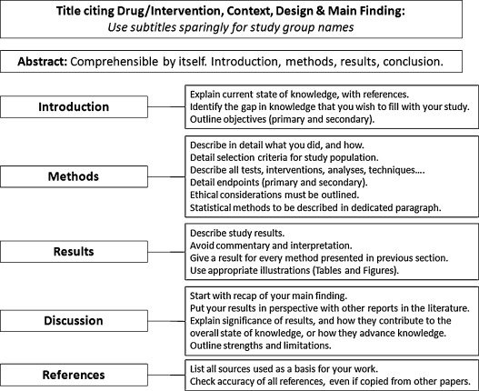
Image source: Writing a scientific article: A step-by-step guide for beginners
Not just another Maths course
- Construct suitable mathematical models of real-world phenomena

|

|
| \(T(t)=\left(T_0-T_m\right) e^{-kt} + T_m\) | $\ds P(t) = \frac{\theta P_0 e^{rt}}{\theta-P_0+P_0e^{rt}}$ |
Not just another Maths course
- Solve problems related to mathematical models of real-world phenomena
Fluid simulation by Amanda Ghassaei
Not just another Maths course
- Relate the use of mathematics to your own scientific studies and interests
- Use computational tools to perform mathematical calculations
- Construct and critique quantitative scientific arguments
- Communicate scientific arguments effectively in writing
- Construct suitable mathematical models of real-world phenomena
- Solve problems related to mathematical models of real-world phenomena

Why QR?
Example - attendance vs grades
Example - attendance vs grades
Question: Is there a relationship between the course attendance and the grades?
- How would you approach answering this questions?
- What do we need to answer it?
Example - attendance vs grades
Question: Is there a relationship between the course attendance and the grades?
|
|
Example - attendance vs grades
Research results: Better attendance leads to better success.
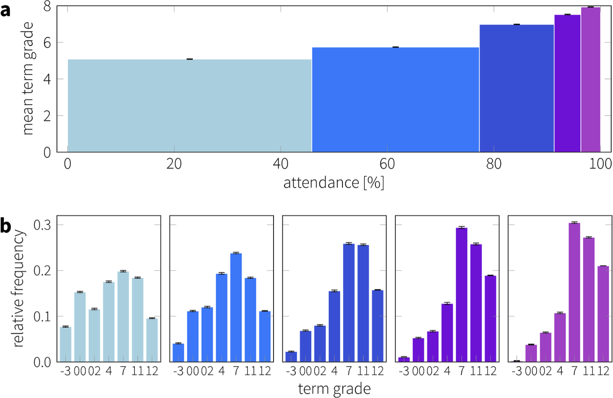
Source: Kassarnig V, Bjerre-Nielsen A, Mones E, Lehmann S, Lassen DD (2017) Class attendance, peer similarity, and academic performance in a large field study. PLoS ONE 12(11): e0187078. doi.org/10.1371/journal.pone.0187078
Why quantitative reasoning?
To answer scientific questions
- Quantitative: the arguments involve numbers
- Reasoning: we want to take a scientific approach
In this course, you will learn
- Why and how mathematics is important to seemingly non-mathematical sciences
- How to use mathematical methods to answer scientific questions
- How to present those answers
Quantitative Reasoning
Source: Elrod, Susan. 2014. Quantitative Reasoning: The Next “Across the Curriculum” Movement. Peer Review 16 (3).
Examples
- Vaccines 💉
Image source: mRNA vaccines - What they are and what they are not
Examples
Data Visualization of Temperature Anomalies:
Reference: |
|
Examples
|
Image source: Wind turbine solar panel alternative energy source |
Examples
|
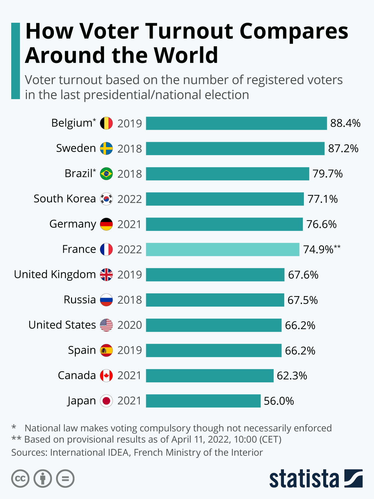 Image source: How Voter Turnout Varies Around the World |
Examples
- Artificial Intelligence 🤖
DALL-E, Jan 2023: Hierarchical Text-Conditional Image Generation with CLIP Latents
Examples
- Artificial Intelligence 🤖
ChatGPT, Jul 2025
Examples
|
🌏 Global:
|
📌 Local:
|
Course Topics
- Maths: Numbers and data, Inferring from data, Functions (weeks 2-5)
- Critical Thinking, Logical Arguments, Approximations (weeks 6-8)
- Communicating science and scientific writing (weeks 9-10)
- (Big) Data Science (week 11)
What will we look at? - Maths
- Numbers and data
- Ratios, related rates, linear relations
- Inference from data sets
- Functions we use to represent data
What will we look at? - Science
|
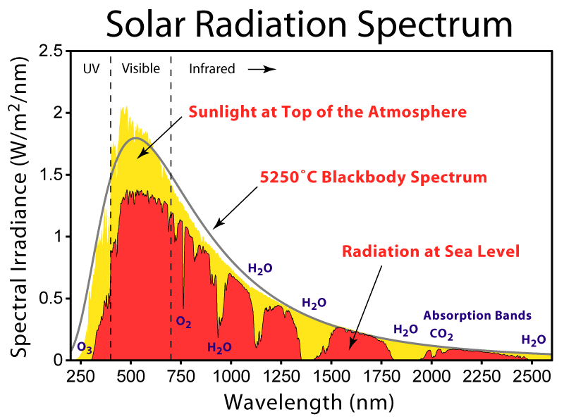 Image source: Wikipedia |
What will we look at? - Science
-
Problem posing and problem solving:
- Converting word problems into mathematical problems
- Getting approximate answers (e.g. how much water do we flush down the toilet each year?)
What will we look at? - Science
|
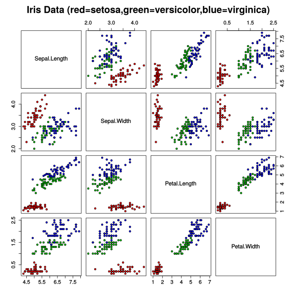 Image source: Wikipedia |
Some nice references
|
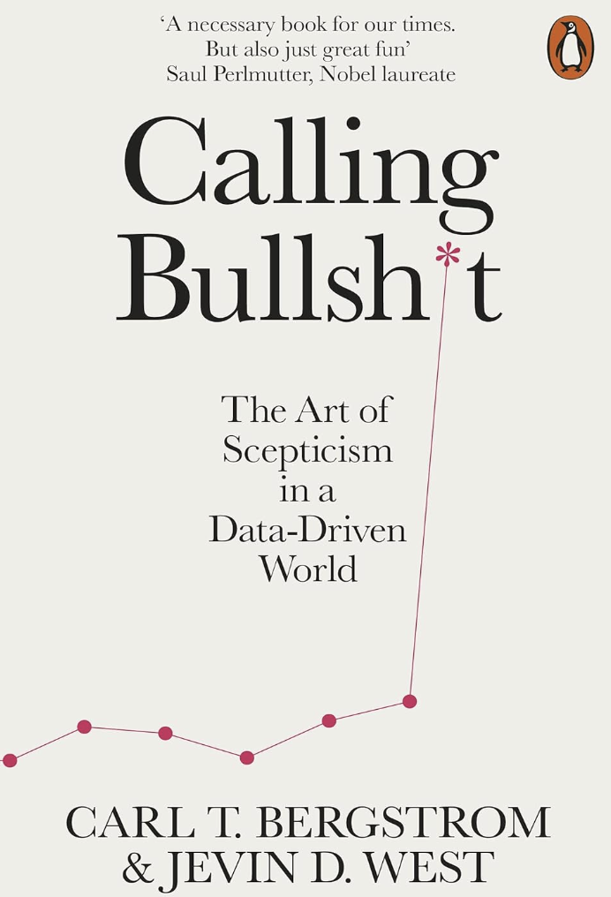 |
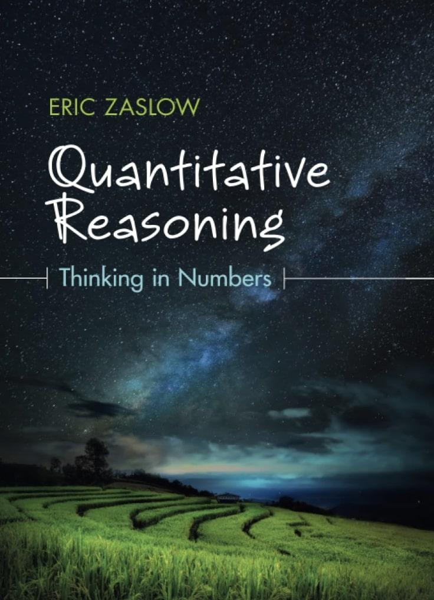 |
What is science?
What is science?
... a system of knowledge covering general truths or the operation of general laws especially as obtained and tested through scientific method
Merriam-Webster Dictionary (2025)

What is science?
|
... a system of knowledge covering general truths or the -Merriam-Webster Dictionary (2025) The use of evidence to construct testable explanations and predictions of natural phenomena, as well as the knowledge generated through this process. The National Academy of Sciences (2008) Science alone of all the subjects contains within itself the lesson of the danger of belief in the infallibility of the greatest teachers in the preceding generation... As a matter of fact, I can also define science another way: Science is the belief in the ignorance of experts. Richard Feynman (1968) |
The net of science covers the empirical universe: what is it made of (fact) and why does it work this way (theory). Stephen Jay Gould (1997) Science is not an encyclopedic body of knowledge about the universe. Instead, it represents a process for proposing and refining theoretical explanations about the world that are subject to further testing and refinement. But, in order to qualify as ‘scientific knowledge,’ an inference or assertion must be derived by the scientific method. Proposed testimony must be supported by appropriate validation—i.e., ‘good grounds,’ based on what is known. In short, the requirement that an expert’s testimony pertain to ‘scientific knowledge’ establishes a standard of evidentiary reliability The US Supreme Court (1993) in Daubert v. Merrell |
Source: Hohenberg, P.C. What is Science?
What are properties of science?
(Source: Hohenberg, P.C. What is
Science?)
- Science is collective, public knowledge
- Science is universal
- Science is the cumulation of (on-going) scientific endeavor
- Science is bathed in ignorance and subject to change
What lies outside of science?
(and this course)
- Moral issues
- Existential issues
- Political issues
The Scientific Method
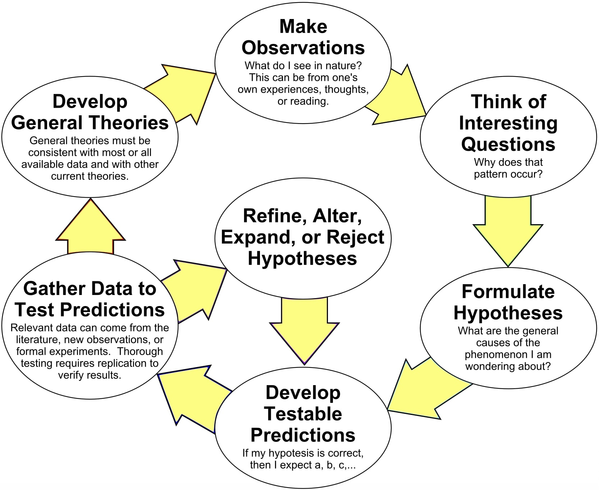
Comments on the Scientific Method
- Distinguish facts from assumptions
- Avoid (un)consciously favoring expected result (confirmation bias)
- Use other available data, beyond what we find ourselves
- Extraordinary claims require extraordinary evidence
Comments on the Scientific Method
- Correlation does not mean causation
-
Different forms of explanation
- Cause
- Causal mechanism
- Laws
- Underlying processes
- Occam's Razor - we prefer explanations that introduce the fewest new questions/assumptions
- Experimentation - design tests to minimize false confirmation and false rejection
- Negative results are part of the Scientific Method
- The Scientific Method isn't always linear
Quantitative Reasoning and the Scientific Method
|
|
|
👉 Maths/stats to evaluate quantities and provide data 💻 📈 📊
|
Statistical approaches to infer...
|
Mathematical models to investigate causation
|
Doing maths in the 21st century
In QR, we will focus on understanding how to set up mathematical problems.
- We can outsource solving those calculations to machines 🤖 where possible 😃 💻
- We'll use online calculators (wolframalpha.com ), mathematical software (Excel)
- Yes, we will use Excel a lot! 😃 💻 📈 📊 📉

Assumed knowledge
📖
Assumed knowledge
- Algebra (add, subtract, multiply, divide) with fractions and negative numbers
- Work with positive, negative and fractional powers
- Find absolute values
- Work out whether one number is greater or less than another
Addition and Multiplication
| \[ \begin{eqnarray*} 3+2 &=& \\ 43+12 &=& \\ 11 + 433 &=& \\ 7 + 7 + 7 + 7 + 7 + 7 &=& \end{eqnarray*} \] | \[ \begin{eqnarray*} 3 \times 2 &=& \\ 12 \times 21 &=& \\ 40 \times 2 &=& \\ 2 \times 40 &=& \\ \end{eqnarray*} \] |
| \[ \begin{eqnarray*} 3+2 &=& 5 \\ 43+12 &=& 55 \\ 11 + 433 &=& 444\\ 7 + 7 + 7 + 7 + 7 + 7 &=& 42 \end{eqnarray*} \] | \[ \begin{eqnarray*} 3 \times 2 &=& 6\\ 12 \times 21 &=& 252\\ 40 \times 2 &=& 80\\ 2 \times 40 &=& 80\\ \end{eqnarray*} \] |
Properties of Addition and Multiplication
Commutative law:
\(a+b \) \( = b+a\qquad \qquad\) \(a\times b \) \( = b \times a\)
Associative law:
\((a+b) + c \) \(= a + ( b + c)\quad \quad \) \( (a\times b)\times c = a\times (b\times c) \)
Distributive law:
\( a\times (b+ c) \) \( = a\times b + a \times c\)
Inverse Operations
Subtracting is the inverse of adding:
\( 7 = 4+ 3 \) \(\quad \Ra \quad 7- 3 = 4 \)
Dividing is the inverse of multiplying:
\( 8 = 2\times 4 \) \(\quad \Ra \quad 8 ÷2 = 4 \)
Question: Are these operations commutative? 🤔
Various Kinds of Numbers
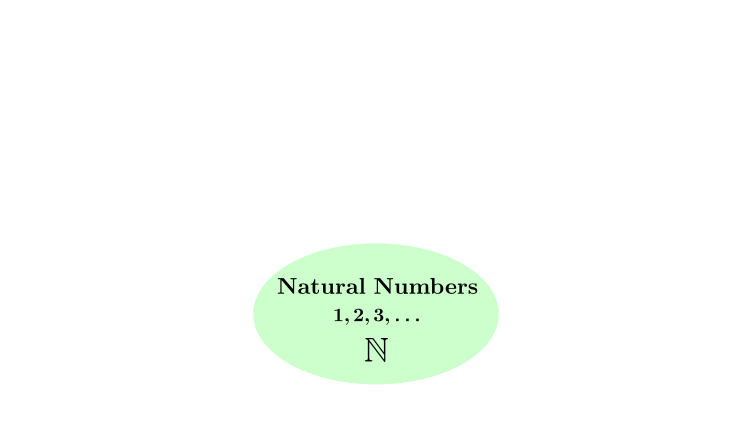
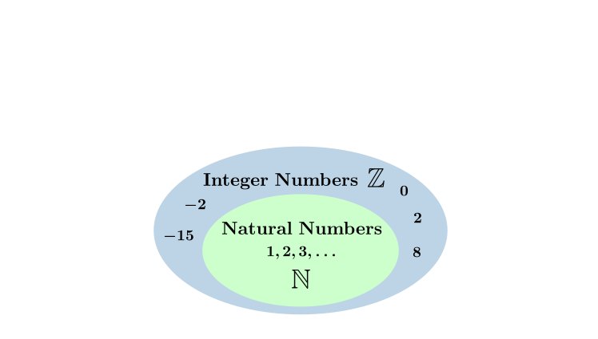
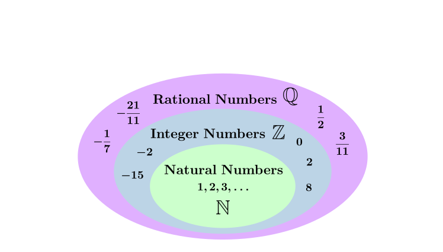
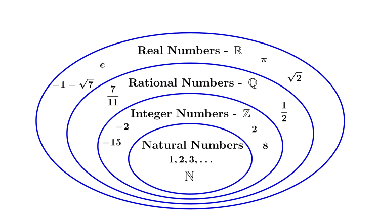
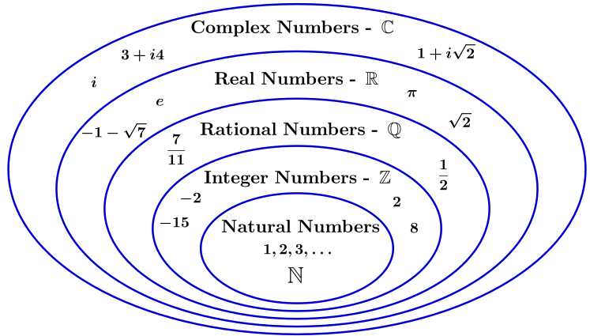
Negative Numbers and Fractions
|
Subtracting a negative number is the same as adding that number, e.g. \(5-(-4) \) \(=5+4 \) \(=9\) |
Multiplying and dividing fractions: \(\dfrac{a}{b}\times \dfrac{c}{d} \) \(=\dfrac{ac}{bd}\) \(\dfrac{a}{b} ÷\dfrac{c}{d} \) \( = \dfrac{a}{b} \times \dfrac{d}{c} \) \(= \dfrac{ad}{bc}\) Adding and subtracting fractions: \(\dfrac{a}{b}+ \dfrac{c}{d} \) \( =\dfrac{ad+ bc}{bd}\) \(\dfrac{a}{b}- \dfrac{c}{d} =\dfrac{ad- bc}{bd}\) |
Exponents (aka Powers or Indices)
Repeated multiplication:
\(\large 2\times 2\times 2\times 2\times 2\times 2\times 2\times 2\times 2 \times 2\)
\(\large \underbrace{2\times 2\times 2\times 2\times 2\times 2\times 2\times 2\times 2 \times 2}_{10-\text{times}}\)
\(\large \underbrace{2\times 2\times 2\times 2\times 2\times 2\times 2\times 2\times 2 \times 2}_{10-\text{times}} = 2^{10}\)
If you multiply two numbers with exponents, you add the exponents:
\(\large 3^{10}\times 3^{5}\) \(\large = 3^{10+5}\) \( \large = 3^{15}\)
If you exponent twice, you multiply the exponents:
\(\large \left(3^{10}\right)^{3}\) \(\large = 3^{10}\times 3^{10}\times3^{10}\) \( \large = 3^{10+10+10}\) \( \large = 3^{30}\)
Roots as Rational Exponents
One inverse of exponents is taking roots:
\(\Large 2^{3}=8\quad \) \( \Large \Ra \quad \sqrt[3]{8}=2\)
Taking roots can be considered as 1/exponent:
\(\Large \sqrt{3}\) \( \Large = \sqrt[2]{3}\) \( \Large = 3^{\frac{1}{2}}\)
\(\Large \sqrt[3]{8}\) \(\Large = 8^{\frac{1}{3}}\)
\(\Large \sqrt[5]{7}\) \(\Large = 7^{\frac{1}{5}}\)
⚠️ Careful! This is only really well-defined for positive numbers and odd roots of negative numbers
Logarithms
The other inverse of exponents is taking logarithms: It tells us what power we need to raise a base to in order to get a certain number.
Logarithms
- \( \log_2 8 = 3\; \) because \( \;2^3 = 8 \)
- \( \log_{10} 1000 = 3 \;\) because \( \;10^3 = 1000 \)
The natural logarithm has base $e$ and is always denoted
"$\ln$"
Sometimes "$\log$" on its own
means "$\log_{10}$", or sometimes "$\ln$"
👉 always check‼️
Absolute value
|
The absolute value of a number is: • that number again if it is positive • minus that number if it is negative. |
\[|3|=3\] \[|-5|=5\] |
Equations & Inequalities
|
This is an equation: \(x+3 = 8.\) To solve for $x$ we have: \(\Ra x+3-3 = 8-3\) \(\Ra x = 8-3\) \(=5\) |
This is an inequality: \(x \gt 3.\) We can perform the common operations: \(\Ra x-3\gt 0\) \(\Ra 3x\gt 9\) \(\Ra x^3\gt 27\) \(\Ra \log_{10}x\gt \log_{10}3\) |
Practice 📝
|
Simplify but use only positive powers:
|
Practice 📝
|
Simplify but use only positive powers:
|
That's all for today!
See you in Week 2!